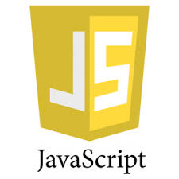

Men dasturlashni o'rganaman
Dasturlash — bu zamonaviy dunyoning eng qiziqarli va istiqbolli sohalaridan biri. U orqali biz kompyuterlarga buyruq berib, murakkab muammolarni hal qiluvchi dasturlar, ilovalar va veb-saytlar yaratamiz. Dasturlash faqat kod yozish emas, balki mantiqiy fikrlash, muammolarni bo'laklarga ajratib yechish va ijodiy yondashuvni talab qiladigan san'at hamdir. Men dasturlashga qiziqishni boshlaganimdan beri, har bir yangi til va texnologiyani o'rganish menga yangi imkoniyatlar eshigini ochib bermoqda. Python, JavaScript, Java va Kotlin kabi tillar orqali men nafaqat veb-saytlar, balki mobil ilovalar yaratishni ham o'rganmoqdaman. Ayniqsa, mobile development sohasi meni juda qiziqtiradi — chunki bugungi kunda deyarli har bir inson smartfon orqali dunyo bilan bog'lanadi, va shu ilovalarni yaratish jarayonida ishtirok etish men uchun katta orzu. Kelajakda men MIT kabi nufuzli universitetda ta'lim olib, bilimlarimni yanada chuqurlashtirishni va professional mobile developer sifatida Moonton kabi yirik kompaniyada ishlashni maqsad qilganman. Har kuni kichik qadamlar bilan — yangi loyiha, yangi kod qatori — men shu orzuga yaqinlashib bormoqdaman.
Dasturlash tillari
- Python

- Java

- C++

- JavaScript

Python dunyodagi eng ommabop dasturlash tillaridan biridir. U 1991-yilda Guido van Rossum tomonidan yaratilgan. Sintaksisi sodda va tushunarli bo‘lgani uchun yangi boshlovchilar uchun juda qulay hisoblanadi. Python sun'iy intellekt (AI), ma'lumotlar tahlili (Data Science), mashinaviy o‘qitish (Machine Learning), robototexnika, avtomatlashtirish va veb-dasturlashda keng qo‘llaniladi. Django va Flask kabi mashhur freymvorklari mavjud.
Java 1995-yilda Sun Microsystems tomonidan ishlab chiqilgan. Uning asosiy afzalligi — "Bir marta yoz, hamma joyda ishga tushir" tamoyilidir. Java Android ilovalari, bank tizimlari, korporativ dasturlar va yirik server ilovalarini yaratishda keng qo‘llaniladi. Java xavfsizligi, barqarorligi va yuqori unumdorligi bilan mashhur.
C++ 1985-yilda Bjarne Stroustrup tomonidan yaratilgan. U yuqori tezlikda ishlaydigan dasturlar yozish imkonini beradi. Operatsion tizimlar, kompyuter o‘yinlari, grafik dasturlar, drayverlar va muhandislik dasturlarini yaratishda keng foydalaniladi. C++ obyektga yo‘naltirilgan dasturlashni qo‘llab-quvvatlaydi va kuchli imkoniyatlarga ega.
JavaScript 1995-yilda Brendan Eich tomonidan yaratilgan. U veb-saytlarni interaktiv qilish uchun ishlatiladi. HTML va CSS bilan birgalikda zamonaviy veb-sahifalarning asosiy texnologiyalaridan biri hisoblanadi. JavaScript yordamida animatsiyalar, onlayn o‘yinlar, kalkulyatorlar, chat tizimlari va murakkab veb-ilovalar yaratiladi. Node.js texnologiyasi orqali server dasturlarini ham yozish mumkin
My dream
Har bir insonning o‘z orzusi bo‘ladi. Mening eng katta orzuim kelajakda malakali dasturchi bo‘lishdir. Men zamonaviy texnologiyalarni o‘rganishni, yangi dasturlar yaratishni va odamlarning ishini yengillashtiradigan loyihalar ustida ishlashni xohlayman. Hozirgi kunda axborot texnologiyalari juda tez rivojlanmoqda. Shuning uchun dasturlashni chuqur o‘rganish va doimo yangi bilimlarni egallash muhim deb hisoblayman. Men Python, JavaScript va C++ kabi dasturlash tillarini mukammal o‘rganishni rejalashtirganman. Kelajakda veb-saytlar, mobil ilovalar hamda sun’iy intellektga asoslangan dasturlar yaratishni istayman. Shuningdek, dunyoning yirik IT kompaniyalarida ishlash yoki o‘z dasturiy kompaniyamni tashkil etish ham mening maqsadlarimdan biridir. Orzuimga erishish uchun har kuni yangi bilimlarni o‘rganaman, amaliy mashqlar bajaraman va tajriba orttirishga harakat qilaman. Men mehnatsevarlik, sabr-toqat va intilish insonni har qanday maqsadga yetkazishiga ishonaman. Kelajakda yurtimiz rivojiga hissa qo‘shadigan foydali dasturlar yaratishni va yosh dasturchilar uchun namuna bo‘lishni xohlayman